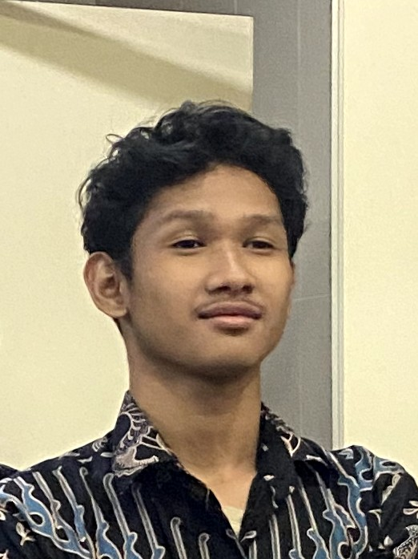
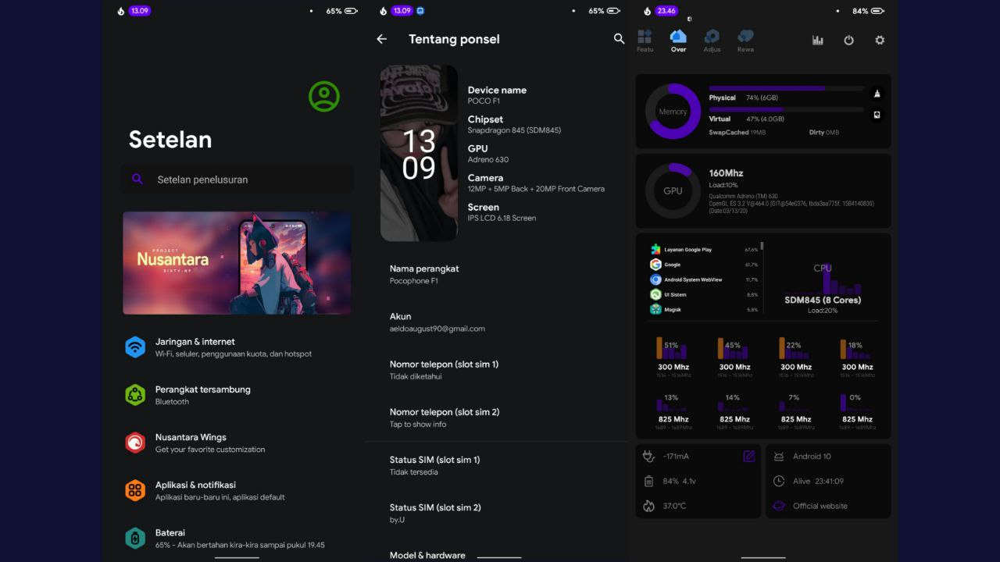
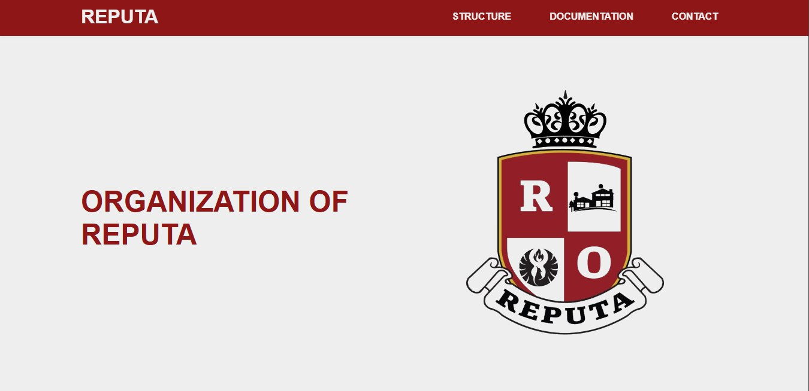
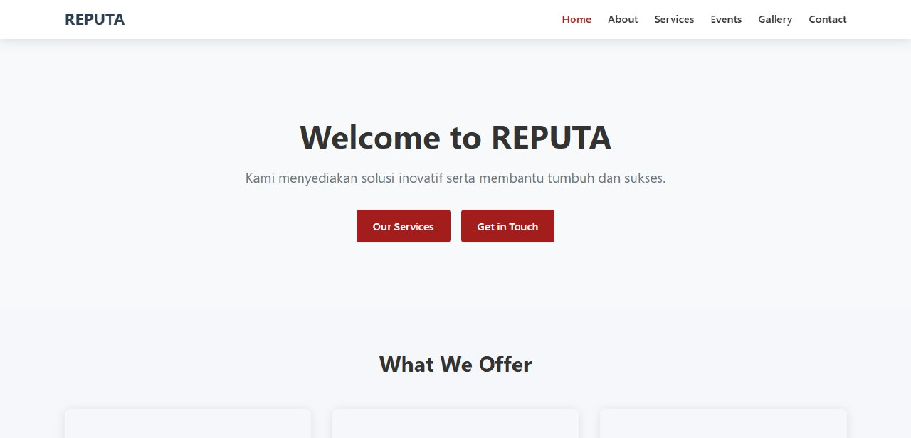
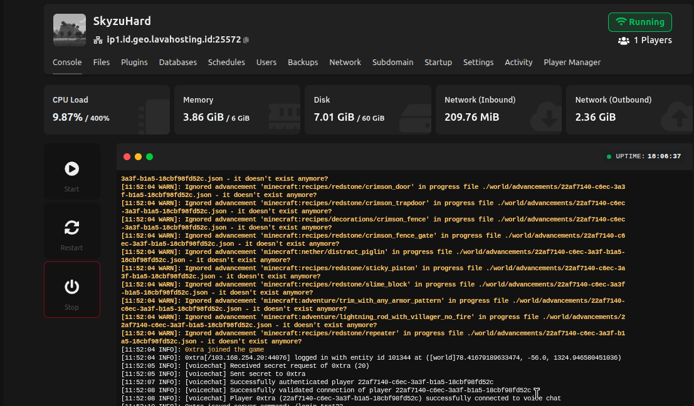
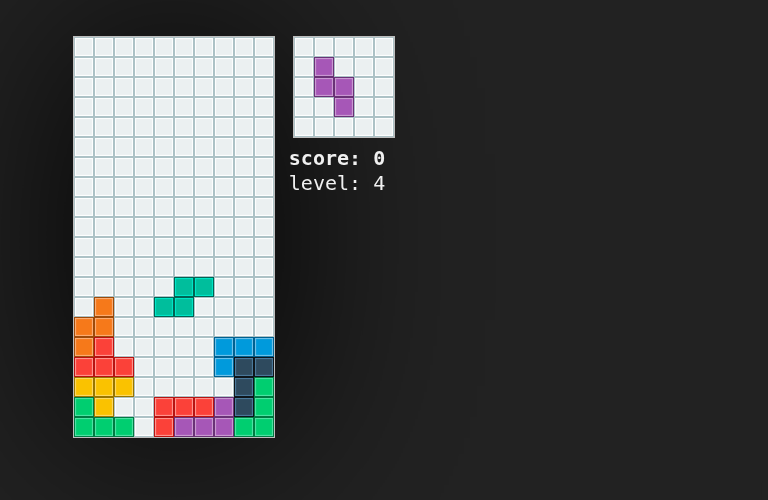
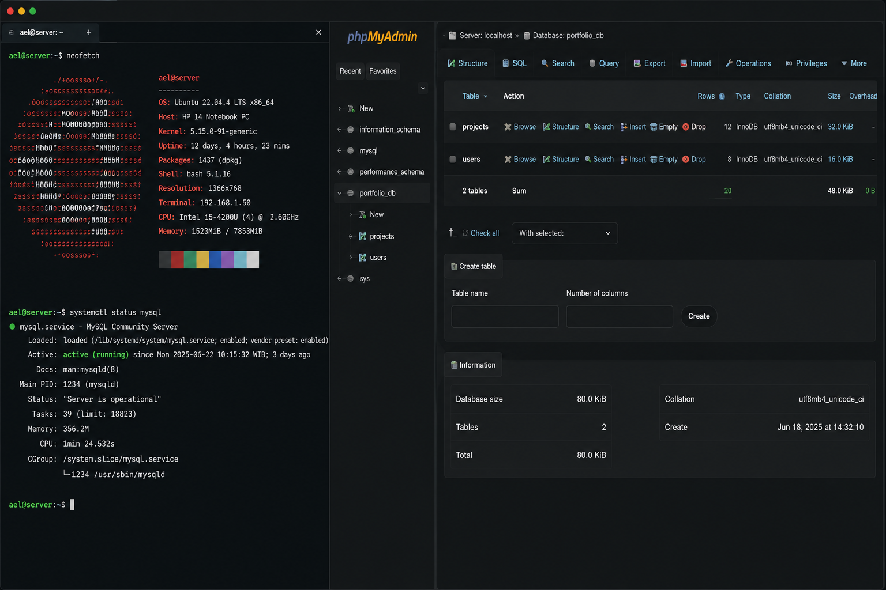
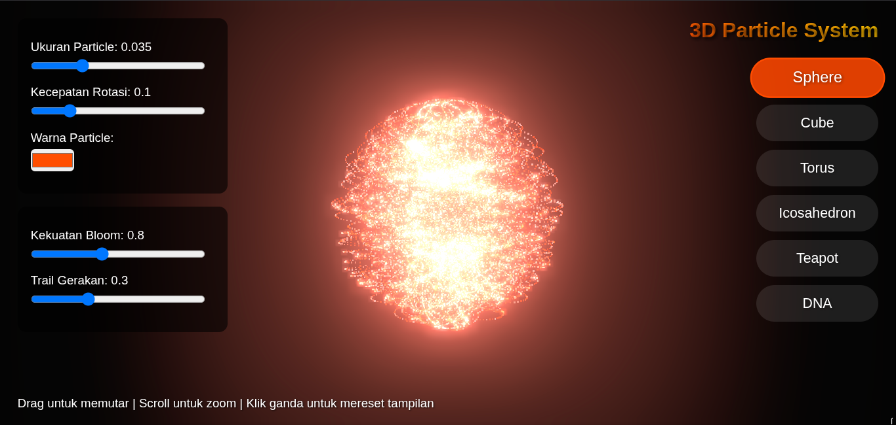
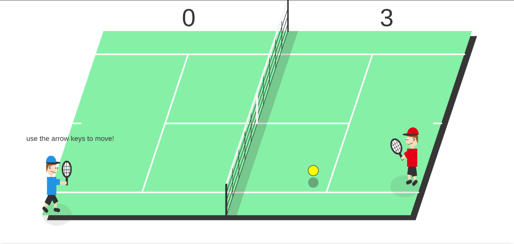

Saya adalah mahasiswa yang memiliki ketertarikan besar di bidang teknologi informasi, khususnya pengembangan web, jaringan komputer, dan manajemen server. Aktif mempelajari berbagai teknologi modern serta mengembangkan proyek yang berfokus pada solusi digital, infrastruktur jaringan, dan administrasi server.

Saya Mohammad Aeldo August Prabowo, seorang mahasiswa yang memiliki minat besar di bidang teknologi informasi, khususnya Web Development, Jaringan Komputer, dan Administrasi Server.
Saya merupakan pribadi yang senang belajar hal baru dan memiliki rasa penasaran tinggi terhadap cara kerja suatu teknologi. Ketertarikan tersebut mendorong saya untuk aktif mengeksplorasi dan memodifikasi berbagai perangkat, sistem operasi, jaringan, maupun server guna memahami bagaimana teknologi bekerja secara lebih mendalam.
Perjalanan saya dimulai dari ketertarikan terhadap komputer dan internet, yang kemudian berkembang menjadi hobi dalam membangun website, mengelola server Linux, melakukan konfigurasi jaringan menggunakan MikroTik, hingga mengembangkan dan mengoptimalkan server. Melalui berbagai eksperimen dan proyek pribadi, saya terus mengasah kemampuan teknis serta kemampuan problem solving dalam menghadapi berbagai tantangan teknologi.
Bagi saya, proses belajar tidak hanya berasal dari teori, tetapi juga dari pengalaman langsung mencoba, menguji, memperbaiki, dan mengembangkan suatu sistem. Karena itu, saya selalu tertarik untuk mengeksplorasi teknologi baru dan mencari solusi yang lebih efektif untuk setiap permasalahan yang saya temui.
Saat ini saya terus mengembangkan kemampuan di bidang Web Development, Networking, dan Server Administration sebagai bekal untuk berkarier di industri teknologi dan berkontribusi dalam menciptakan solusi digital yang bermanfaat.
Mohammad Aeldo August Prabowo
aeldoaugust90@gmail.com
Tangerang, Banten , Indonesia
Menjabat sebagai Sekretaris Karang Taruna tingkat RW dengan tanggung jawab mengelola administrasi organisasi, menyusun surat-menyurat, membuat laporan kegiatan, mendokumentasikan hasil rapat, serta mendukung koordinasi antar anggota dalam berbagai program kepemudaan dan kegiatan sosial masyarakat.
Menjabat sebagai Sekretaris Karang Taruna tingkat Kelurahan dan berperan dalam pengelolaan administrasi organisasi, penyusunan dokumen kegiatan, koordinasi program kerja, serta mendukung komunikasi antara pengurus dan anggota dalam pelaksanaan kegiatan kepemudaan dan pengembangan masyarakat.
terlibat dalam kegiatan operasional di lingkungan DPRD, khususnya
pada bidang arsip dan dukungan IT. Meliputi pengelolaan
dan digitalisasi dokumen arsip agar lebih tertata dan mudah diakses.
Selain itu, juga membantu proses input data serta pengorganisasian
dokumen administrasi.
Mendukung kebutuhan IT internal seperti
membantu instalasi perangkat, troubleshooting ringan, serta memastikan
sistem jaringan dan perangkat berjalan dengan baik untuk kebutuhan operasional
kantor.
memiliki pengalaman dalam pekerjaan teknis lapangan yang
berkaitan dengan instalasi dan konfigurasi sistem jaringan
serta perangkat keamanan. Beberapa pekerjaan yang pernah
saya lakukan meliputi instalasi CCTV, konfigurasi DVR/NVR,
serta memastikan sistem dapat diakses dan berjalan dengan stabil.
Selain itu, saya juga berpengalaman dalam instalasi jaringan WiFi,
setup router, dan konfigurasi perangkat jaringan menggunakan MikroTik,
termasuk pengaturan dasar seperti routing, DHCP, dan manajemen bandwidth
sederhana. Saya juga terbiasa melakukan troubleshooting jaringan untuk
mengatasi gangguan koneksi internet maupun LAN.
Memiliki pengalaman dalam mengelola server Minecraft, mulai dari instalasi server, konfigurasi plugin, pengaturan permission, hingga optimasi performa. Terbiasa menggunakan Pterodactyl Panel untuk administrasi server serta mengimplementasikan Velocity Proxy untuk menghubungkan beberapa server dalam satu jaringan. Pengalaman ini membantu meningkatkan kemampuan dalam administrasi server, troubleshooting, manajemen sistem, dan pengelolaan layanan berbasis jaringan.
Membangun dan mengelola server pribadi (homelab) menggunakan perangkat hardware bekas sebagai media pembelajaran dan pengembangan. Mengimplementasikan sistem berbasis Linux untuk menjalankan layanan web, database, dan server Minecraft, serta melakukan konfigurasi jaringan, pemeliharaan sistem, monitoring layanan, dan troubleshooting secara mandiri.

Melakukan eksplorasi dan modifikasi sistem operasi Android melalui Custom ROM, Custom Kernel, serta optimasi performa perangkat. Proyek ini berfokus pada pemahaman sistem Android, peningkatan performa, stabilitas, dan pengalaman pengguna.

Website profil organisasi REPUTA yang dikembangkan sebagai media informasi dan publikasi kegiatan organisasi. Website ini dirancang dengan tampilan sederhana, responsif, dan mudah diakses oleh anggota maupun masyarakat umum.

Pengembangan lanjutan dari website REPUTA generasi pertama dengan fokus pada perbaikan bug, peningkatan tampilan antarmuka, optimasi pengalaman pengguna, serta penyajian informasi organisasi yang lebih lengkap dan terstruktur.

Mengelola dan mengoptimalkan server Minecraft berbasis PaperMC dengan berbagai plugin pendukung. Proyek ini mencakup konfigurasi server, optimasi performa, pengaturan permission, serta integrasi sistem jaringan menggunakan Velocity dan Pterodactyl Panel.

Pengembangan game Tetris berbasis web menggunakan HTML, CSS, dan JavaScript. Proyek ini mengimplementasikan mekanisme permainan klasik seperti pergerakan blok, rotasi bentuk, deteksi tabrakan, penghapusan baris otomatis, sistem skor, dan peningkatan tingkat kesulitan secara bertahap. Dibangun untuk melatih logika pemrograman, manipulasi DOM, serta pengelolaan event secara real-time.

Membangun server web dan database menggunakan perangkat hardware bekas yang menjalankan sistem operasi Linux. Server digunakan untuk kebutuhan pengembangan dan pengujian aplikasi web, termasuk konfigurasi web server, database, serta manajemen layanan secara mandiri.

Membangun visual efek partikel 3D yang dapat berubah bentuk secara dinamis. Proyek ini menggunakan Three.js untuk menciptakan efek visual yang menarik dan interaktif, dengan kemampuan untuk mengubah bentuk dan warna partikel secara real-time.

Game tenis sederhana berbasis web yang dibuat menggunakan HTML, CSS, dan JavaScript. Game ini menampilkan mekanik interaktif seperti kontrol paddle, pergerakan bola real-time, dan sistem collision sederhana. Proyek ini dibuat untuk melatih logika pemrograman, interaksi user, serta pengembangan game berbasis web di sisi frontend.
aeldoprabowo90@gmail.com